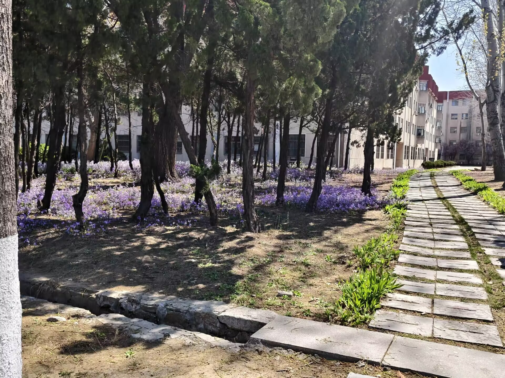
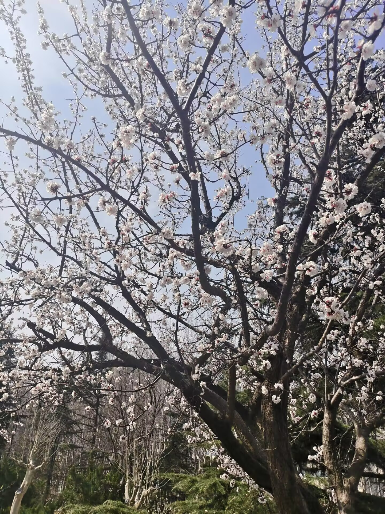

美丽校园·春华
2503刘家续
春风拂过芝罘湾，漫进黄金顶下的鲁东校园，一草一木便从冬日的沉静里苏醒，将百年学府晕染成一幅生机盎然的春日长卷。作为全国绿化模范单位，鲁大的春从不张扬，却在枝头、湖畔、廊间、书声里，藏着最动人的温柔与蓬勃。
乳子湖畔是鲁大春日最灵动的所在。湖水澄澈如镜，映着岸边抽芽的垂柳，条条轻拂水面，溅碎满湖天光。红亭静立湖畔，与不远处的博物馆相映成趣，古雅的建筑线条融进春色里，多了几分人文温润。常有锦鲤摆尾游过，泛起圈圈涟漪，惊飞了停在石栏上的雀鸟。岸边青草葳蕤，不知名的小野花星星点点点缀在绿径间，晨读的学子倚树而坐，书声与鸟鸣相融，成了春日里最治愈的旋律。
春日的鲁大，不止有自然之美，更有青春之姿。阳光运动场上，学子奔跑跳跃，汗水与春风共舞；图书馆窗明几净，新扉满溢清香，光影里是伏案苦读的身影，更有前景、孔子像静静伫立，新绿环绕间，教书育人的薪火代代相传。食堂飘出饭菜香气，林间传来欢声笑语，书香、花香、烟火气相融，勾勒出最鲜活的校园图景。
春风有信，花开有期。鲁东大学的春，是自然的馈赠，是岁月的沉淀，更是青春的注脚。 它藏在白杨的新叶里，藏在湖畔的书声里，藏在牡丹的芬芳里，藏在每一个鲁大人的眼底与心底。在这依山傍海的校园里， 春光不负，韶华不欺，万物向阳生长，学子逐光前行，将百年学府的春日故事，写得温柔而坚定。
自然风光



春风一到，鲁东大学便醒了。不必刻意寻春，只在校园里随意走上一圈，满眼皆是温柔，满心都是清朗。春天从不是单一的风景，而是藏在每一处角落、每一时辰里，悄悄把校园织成生机盎然的模样。
清晨的鲁大，最是清新。薄雾还未散尽，空气里带着微凉的湿润，深吸一口，满是草木初生的清甜。道路两旁的树木褪去冬日的沉寂，枝桠间冒出点点新绿，嫩得像能掐出蜜来。阳光慢慢穿透云层，洒在楼前的空地上，落在蜿蜒的小路上，花在暖暖的阳光里，给整座校园镀上一层柔和的光晕。早起的学子步履匆匆，身影融进春光里，成了春日里最动人的风景。
湖边的春色最是灵动。水面平静如镜，倒映着蓝天、白云与岸边的绿树。春风拂过，湖面泛起细碎的波纹，一圈一圈荡向远方。柳树垂下柔软的枝条，嫩芽顺着枝条生长，风一吹，便轻轻摇曳，像是在与湖水低语。偶尔有小鸟落在枝头，叽叽喳喳地叫着，为宁静的春日增添几分活泼。坐在湖边的石凳上，听风声、水声、鸟鸣声交织在一起，心中所有的浮躁，都在这一刻慢慢消散。
校园里的花，是春日最热烈的告白。不必名贵，不必张扬，却开得自在而灿烂。有的花洁白素雅，静静绽放在枝头，不与群芳争艳；有的花粉嫩娇柔，一簇簇、一团团，热热闹闹地装点着校园。微风掠过，花香淡淡飘散，不浓不烈，却沁人心脾。路过的学子总会不自觉放慢脚步，有的驻足凝望，有的轻轻拍下这一抹春色，把美好藏进记忆里。花开无声，却用最绚烂的姿态，告诉所有人春天已至，希望正盛。
人文景观
- 鲁东大学
- 美丽校园
- 春华风光